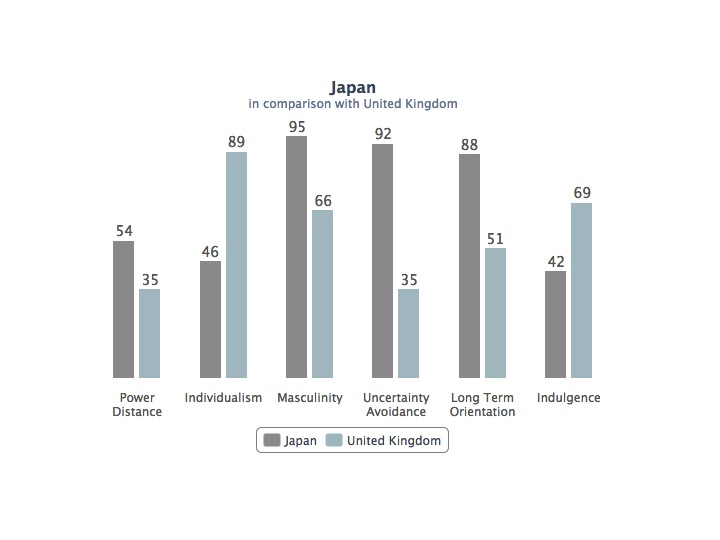
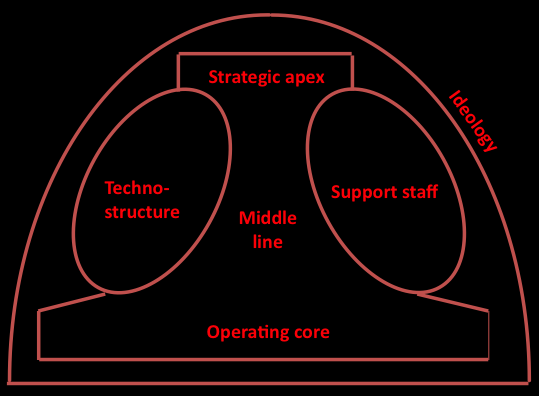

Dark Star
Homage to David Bowie
Bowie managed to change ahead of the market - usually successfully. If he missed he changed again. It is a cute trick that we can learn from.
Let's learn from the star man and apply some of his creative techiques, without having to look like: a crazed doll, malevalent aristo or space cadet. Cool ginger is good, though.
The patterns behind the dark star depict changing conditions. How do we make sense of them?
Firstly we can move Station to Station radially from Chaos to Certainty.
Secondly we can use intuition to move between the points on the star.
The third and fastest path is through the Mobius loop below the star. That, however, requires a twist and step change in personal understanding which is not alway possible because of constraints, especially if stuck in group think.
Personal
Brian Eno, who collaborated on the Berlin trilogy, devised a set of oblique strategies for personal creative work. We offer a library of creative problem solving techniques - for business based creativity.
One way to invisibly change persona but hang on to yourself is to wear different hats using the De Bono Blender.
 The Scan, Analyse, Design, Value cycle is an upgrade to the Plan, Do, Check, Act cycle. It is a reflection of the change from
manufacturing to knowledge work.
To look into the changes that may come as the transition takes place we will use some strategic models. If they are new to you
they may appear as gobbledygook on a first read.
The Scan, Analyse, Design, Value cycle is an upgrade to the Plan, Do, Check, Act cycle. It is a reflection of the change from
manufacturing to knowledge work.
To look into the changes that may come as the transition takes place we will use some strategic models. If they are new to you
they may appear as gobbledygook on a first read.
Cultural
Did Bowie keep his screw down hairdo under a hat - like a cat from Japan?
Cultural norms between Japan and the United Kingdom show marked differences in individualism and attitude to risk. (Source: Hofstede)
When Bowie was referencing Japan the country was a paragon of dull efficiency. It is still up there but has not performed a Lazarus economic turn-around.
We need to be wary when implementing the best practises of Japanese production line methodologies (Kanban) to manage creative endeavours. Both creating and producing are essential to the value chains – but there are differences that can lead to frustration between strategy, operations, delivery and customers.Stepping down from global to corporate culture here are three real-world examples of climate that reflect attitude to idea time and support in different types of organisations. Which one do you work in? Which would you like to work in?
The climate dimensions measured are: Playfulness, Challenge, Risk Taking, Dynamism, Idea Time, Conflicts, Idea Support, Debates, Trust and Openness and Freedom.

The above Organisational Model is Mintzbergs 'Magic' Mushroom.
 The diagram is red because globalisation and automation are about to turn organisations into bloodbaths. According to Mark Carney 15M jobs in the UK are under threat. Shareholder pressure will squeeze all parts of the business. Read on to find out ways to counter the worst of the effects.Organisational
As we move into the knowledge based era strategic value has changed:
| Manufacturing Age | Information Economy |
|---|---|
| Rarity | Efficiency |
| Inimitability | Risk Reduction |
| Non-transferability | Applied Learning |
Bowie was smart. He sold his back catalog as Bowie Bonds: always a step ahead of the market.
Licensing of Intellectual Property [IP] will increase once intellectual capital audits are appreciated and in place.
What IP do you have as an organisation? Can you: create, measure, protect and monetise it?
Value should be split to measure and retain learning as well as strategic and customer benefits.
if you need a Major Tom < as in Target Operating Model > update...or help implementing any of these types of fixes at personal, team, organisational or strategic levels get in touch